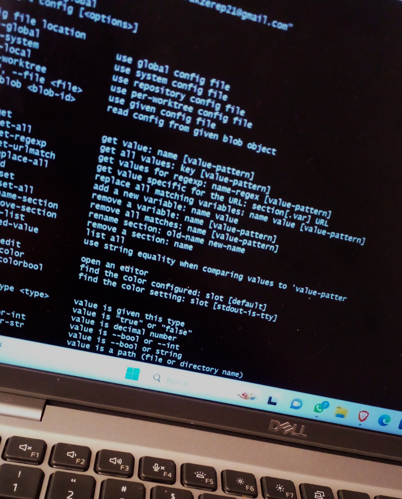

Soy Karen Perez Ortiz una chica introvertida, alegre, empática, que le gusta apasionarse con sus gustos me gusta investigar mas alla de todo cuando algo me llama mucho la antencion, me gusta apoyar a mis amigos, trato de ser un buen ejemplo para mis padres, busco lo mejor para mi y me gusta que las cosas salgan bien. Me encantan las cosas sencillas pero agradables.
Estudio tics porque es una carrera que me llamó mucho la atención, ademas de ser una carrera con la que conecto mas a diferiencia de otras, me agarda la idea de poder crear cosas solo con una computadora. Durante los años que fui estudiando me generó más interés, además de que es una carrera muy variada , buen pagada y con muchas oportunidades. Generalmente mis intereses en esta carrera es páginas web, programación y redes.

Vivo en una colonia pequeña en el municipio de Mixquiahuala que pertenece al estado de Hidalgo en México, se caracteriza por ser una colonia con muchas costumbres como lo es el dia de muertos, fuego nuevo y la pone y quita bandera, cuenta con un paisaje lleno de mezquites, biznagas entre otro muchos otros árboles.


Mis pasatiempos no son muy extraordinarios, pero me gusta pasar mi tiempo libre en paz:
MI PAGINA WEB